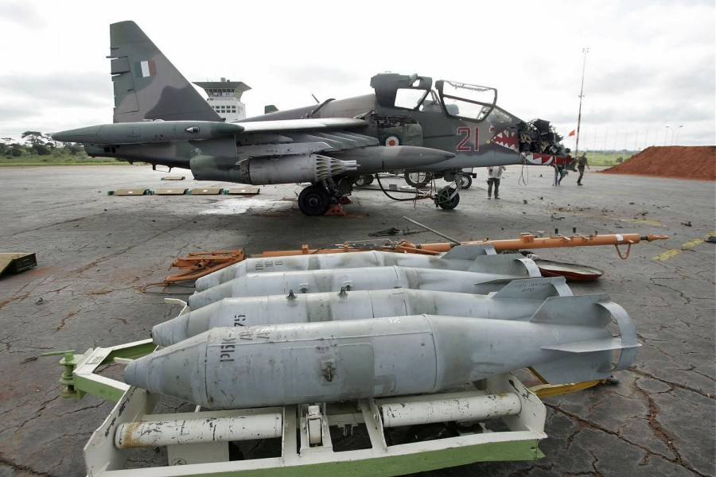
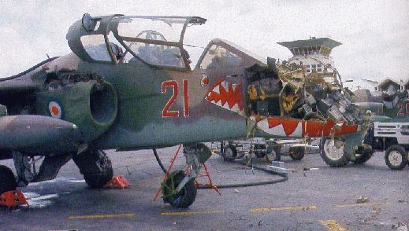
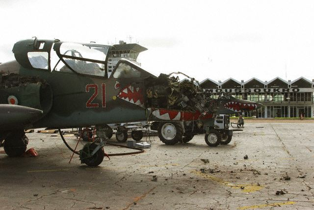
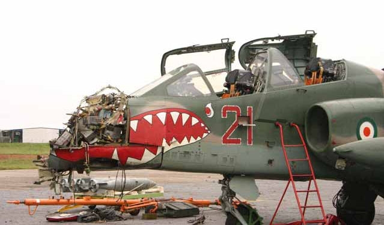
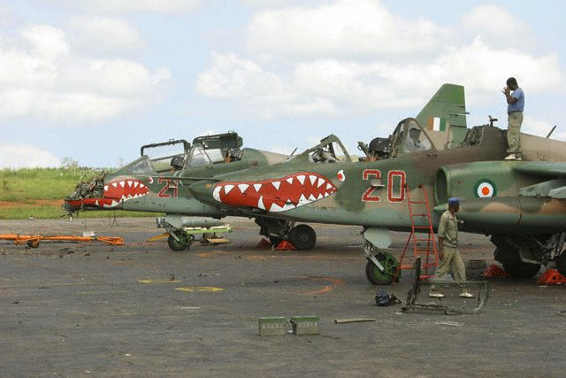
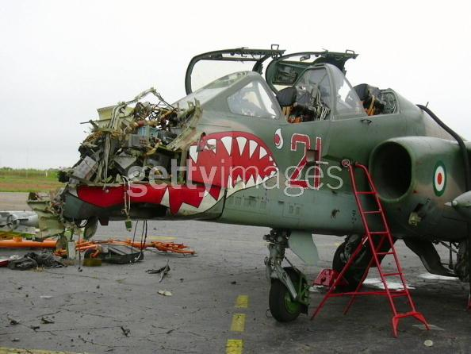
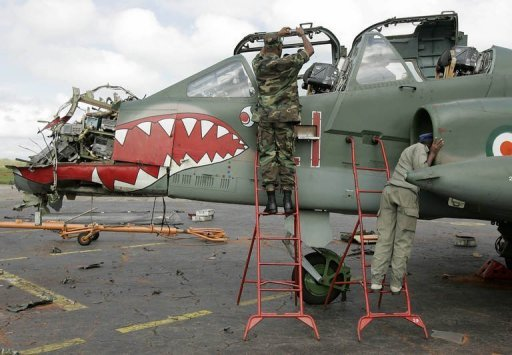

6 ноября 2004 года пара "грачей" ВВС Кот-д'Ивуара атаковала НАР-ми расположенный в Буаке, в нескольких сотнях метрах от лагеря повстанцев, опорный пункт находившегося в стране в рамках операции "Единорог" французского контингента. В результате атаки, произведенной якобы по ошибке, погибли 9 французов и 1 американец.
Франки ответили оперативно: чуть больше чем через час после атаки, после посадки "сухих" на аэродром Ямусукро, который использовался совместно (!) ВВС Кот-д'Ивуара и французами, с территории занятого последними терминала с дистанции порядка 600 метров были выпущены две ракеты ПТРК "Милан". Франки утверждают, что они старались избежать лишних жертв и поэтому целились в носовые части машин. Получилось немного не так как планировалось - одна из ракет в цель не попала, серьезные повреждения получил только один из Су-25УБ, а один из техников все же погиб. Тем не менее, цель была достигнута - пара "грачей" была выведена из строя.
Правда, это послужило поводом для атаки в тот же день французского контингента, но это уже немного другая история.







- Кот-д'Ивуар, 2004 год